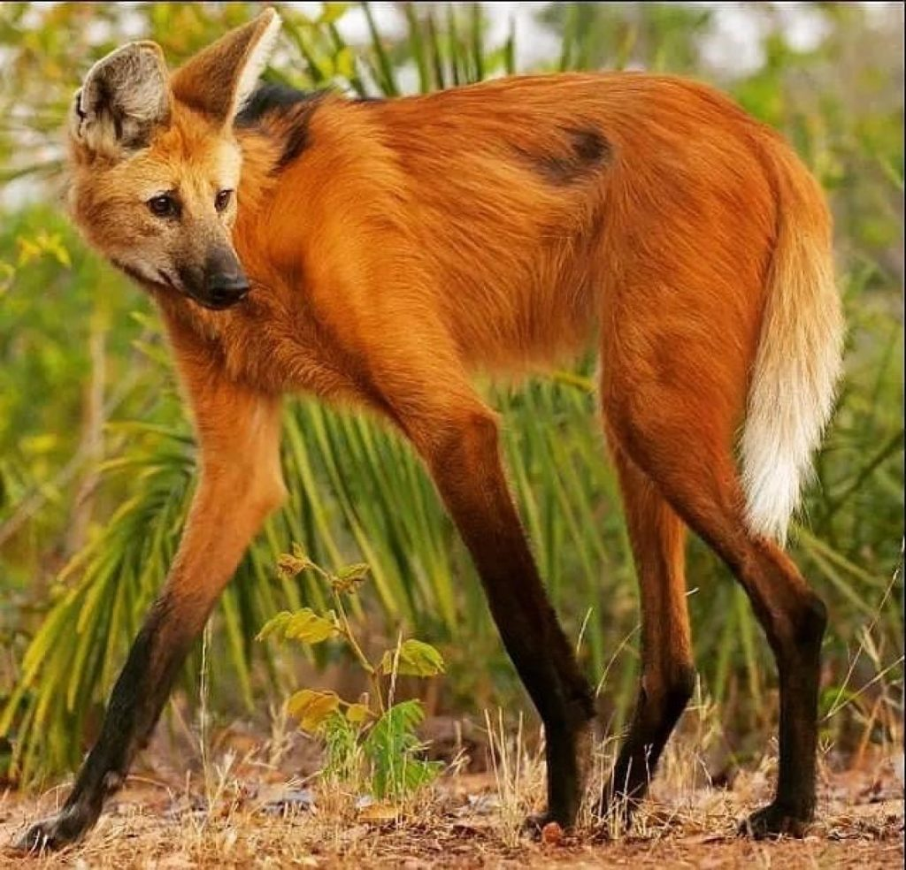

The Iguazú Falls (in Portuguese: cataratas do Iguaçu) are a set of waterfalls located on the Iguazú River, on the border between the Argentine province of Misiones and the Brazilian state of Paraná. They are completely inserted in protected areas; The Argentine sector is located within the Iguazú National Park, while the Brazilian sector is located in the Iguazú National Park (Parque Nacional do Iguaçu), in the State of Paraná. They are close to the border between Paraguay and Argentina, only 13.8 km in a straight line. They were chosen as one of the "Seven Natural Wonders of the World."
They are made up of 275 jumps; 80% of them are located on the Argentine side. A spectacle apart is its largest waterfall and, at 80 m, also the highest, the Devil's Throat, which can be enjoyed in all its majesty from just 50 m, walking along the walkways that start from Puerto Canoas, where It is reached using the ecological train service. The border between both countries passes through this jump. They can be attributed to the characteristics of the area: “An exuberant and almost tropical vegetation, the luxuriance of the large ferns, the bamboo canes, the graceful trunks of the palm trees and thousands of species of trees, with their crowns leaning over the decorated abyss. with mosses, red begonias, golden orchids, bright bromeliads and vines with trumpet flowers...
The name of the falls in Spanish, Iguazú and archaically Yguazú, comes from two words of Guaraní origin: the word "y" (read [ɨ]) as a closed central unrounded vowel and the word "guazú", which in that tongue mean y= 'water', guazú= 'big'; That is, Iguazú means “big water.” In Portuguese they are called Iguaçu Falls.
Iguazú Falls are the main tourist center in northeastern Argentina, and one of the main tourist centers in the entire country. In them, the walks are mainly on the Argentine side, although from the Brazilian side you have a panoramic view. In 1984 the Argentine sector of the falls, the Iguazú National Park, was declared a World Heritage Site by UNESCO. Later, in 1986, the sector of Brazil, which is located in the Iguazú National Park, was also declared a World Heritage Site. Within the Argentine park is the Sheraton Iguazú Hotel (formerly the Internacional Iguazú hotel), which has a panoramic view of the Devil's Throat and the Brazilian waterfalls. Near the falls is the Argentine city of Puerto Iguazú, at the confluence of the Iguazú and Paraná rivers. The triple border with Paraguay is located there.
Starting from the viewpoint, which is reminiscent of a lighthouse due to its shape and stands out from the surroundings due to its white color, you descend through numerous stairs (some were carved in the same rock) towards the Iguazú River and follow a beautiful pedestrian path. Surrounded by lush jungle you will enjoy a beautiful view of the bottom of the falls. Starting the visit at the Lanusse waterfall and passing through the Álvar Núñez Cabeza de Vaca waterfall, you reach a splendid panoramic point from where you will have a first view of the Devil's Throat. Going a little further you can see San Martín Island and to its right the waterfall of the same name. At the end of the trail is the Bossetti waterfall. There the water vapor produced by the collision of water against the rocks forms a light but incessant rain. Descending along the path towards Punta Peligro you will be able, if you are authorized at that time, to navigate the Iguazú River and cross to Easter Island. On the way back, you pass the Dos Hermanas waterfall, where before you could enjoy a refreshing swim in the enormous natural pool that forms at its base, since this activity is now prohibited.

Iguazú Falls are arranged in a shape that looks like a large inverse "J". On the right bank (north) is the Brazilian territory, which has just over 20% of the falls of said falls; and on the left (south) side are the Argentine falls, which make up almost 80% of the falls. To fully understand and fully appreciate these falls, the recommendation is to visit both the Argentine and Brazilian sides, because on one side you can panoramicly appreciate the other, and vice versa. From this distribution arises the saying that "from Brazil you see the falls, and from Argentina you live them": from Brazil you have a striking panoramic view of most of the falls, which can be traveled vividly on the Argentine side.6 In effect On the Argentine side, the visitor moves between the waterfalls, not only on the walkways that allow you to almost touch the water, but also on the boat rides, which allow you to go up to the side of the impressive waterfalls, and even get close to the Devil's Throat, if you leave by boat from Argentine territory.
Main mammal species Maned Guazú (Chrysocyon brachyurus) Guariba monkey or brown howler monkey (Alouatta guariba) Giant anteater (Myrmecophaga tridactyla) Jaguar (Panthera onca) Giant otter (Pteronura brasiliensis) Venerable dog (Speothos venaticus) Amazonian tapir (Tapirus terrestris) Missionary monkey (Platyrrhini) Main bird species Collared Yetapá (Alectrurus risora) Amazon charao (Amazona pretrei) Greater harpy (Harpia harpyja) Saw-whet duck (Mergus octosetaceus) Maracana shaved face (Primolius maracana) Toco toucan (Ramphastos toco) Yellow thrush (Xanthopsar flavus) Vinous Parrot (Amazona vinacea)
